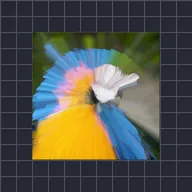

Zoomstrepen

Maakt strepen die vanuit een punt wegschieten door kopieën van de laag eromheen te schalen en de helderste pixels te houden. Gemiddeld geeft een zoomvervaging. R, G, B en A kiezen per kanaal of de kopieën de laagste, hoogste of gemiddelde waarde houden, of dat kanaal ongemoeid laten.
Instellingen
| Instelling | Type | Bereik | Standaard |
|---|---|---|---|
| Midden | Punt (X, Y) | -1 tot 2 | 0.5, 0.5 |
| Sterkte | Getal | 0 tot 1 | 0.15 |
| Alfa | Getal | 0% tot 100% | 100% |
| Bias | Getal | -100% tot 100% | 0% |
| R | Keuze | Min, Max, Gem., Uit | Max |
| G | Keuze | Min, Max, Gem., Uit | Max |
| B | Keuze | Min, Max, Gem., Uit | Max |
| A | Keuze | Min, Max, Gem., Uit | Max |